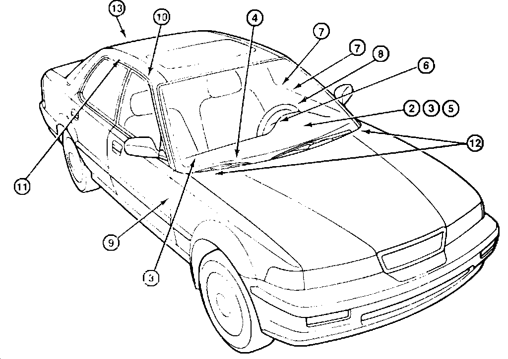

Interior - Squeak and Rattle Repair Tips: Overview
BULLETIN NO.92-034
December 1, 1992
YEAR
1992
MODEL
VIGOR
VIN APPLICATION
ALL
Vigor Interior Squeaks and Rattles
PROBABLE CAUSE AND CORRECTIVE ACTION
See appropriate page for each symptom.
NOTE:
Most of these noises occur during normal driving. Some occur only at certain minimum driving speeds or over certain road surfaces. Ask the customer to describe the driving conditions surrounding each noise.
PARTS INFORMATION
The following special materials are available through normal ordering channels.
EPT Sealer 3 mm thick: P/N 06990-SA5-000
EPT Sealer 5 mm thick: P/N 06991-SA5-000
EPT Sealer 10 mm thick: P/N 06992-SA5-000
Melt Sheet: P/N 72846-282-001XF
Wool Felt 1 mm thick: P/N 06993-SA5-000
WARRANTY CLAIM INFORMATION
In warranty:
The normal warranty applies.
Out of warranty:
Any repair performed after warranty expiration may be eligible for goodwill consideration by the District Service Manager. You must request consideration, and get the DSM's decision, before starting work.
Operation number, flat rate time. failed part number. defect code, and contention code are listed under WARRANTY CLAIM INFORMATION for each type of interior squeak or rattle.
INDEX OF SOURCES

Type/Location
DASHBOARD
Squeaks Around the Instrument Panel
Squeaks Around the Instrument Panel Visor Rattles at the Glove Box
Rattles in the Dashboard Vents
Rattles Behind the Driver Side Knee Bolster
Rattles at the Lower Steering Column
FRONT DOOR
Rattles at the Door Lock Knob
Rattles at the Door Handle Rattles at the Door Lining Squeaks at the Door
ROOF
Squeaks at the Headliner
Squeaks From the Grab Handle
HOOD
Rattles at the Hood
REAR SEAT
Squeaks at the Rear Seat Back